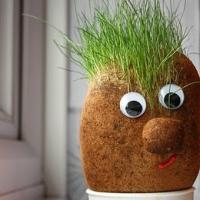

— · Chess.com · liga — · España
Informe agregado de — partidas clásicas
(más — de variantes) · —
Patrones sacados del archivo completo, no de mirar una a una. Fuente: API pública de Chess.com.
Rating almacenado en cada partida ranked.
Volumen por cadencia.
Primeras jugadas y familias ECO con blancas.
Respuestas a 1.e4 y 1.d4, y familias ECO con negras.
Mate, rendición, tiempo y abandono.
Puntuación según los segundos que te quedan al acabar.
Puntuación por hora y por día de la semana.
Nueva sesión si pasan 45 minutos.
Chess.com guarda el rating después de la partida, así que el gradiente se exagera un poco.
Distribución de plies (semimovimientos) y puntuación.